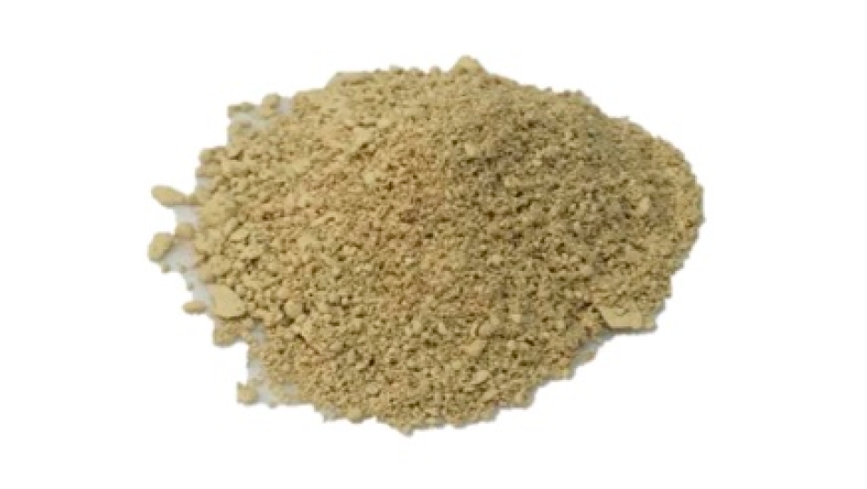

🧊
尚未导入结构
请先在第 ⓪ 步上传 g-C₃N₄ 的 CIF（自动转 POSCAR）或 POSCAR 文件
或一键载入服务器标准结构；校验（偏差 < 5%）通过后，此处才会显示结构模型
或一键载入服务器标准结构；校验（偏差 < 5%）通过后，此处才会显示结构模型
计算建模晶体结构（块体 g-C₃N₄ · R3m 三层 · a=4.78 Å · c=9.97 Å · 21 原子/胞）
C
N
🔬 实验样品光学照片

g-C₃N₄ 粉末实物：三聚氰胺 550 °C 热聚合产物，呈特征黄色
图源：Micromachines 2017, 8, 175, Fig. 2C（CC BY 4.0）
能带结构（k 路径 Γ–M–K–Γ–A）
紫外-可见吸收光谱
带边位置 vs 水的氧化还原电位
结论面板：完成计算后此处显示带隙、带边位置与可见光活性评估。